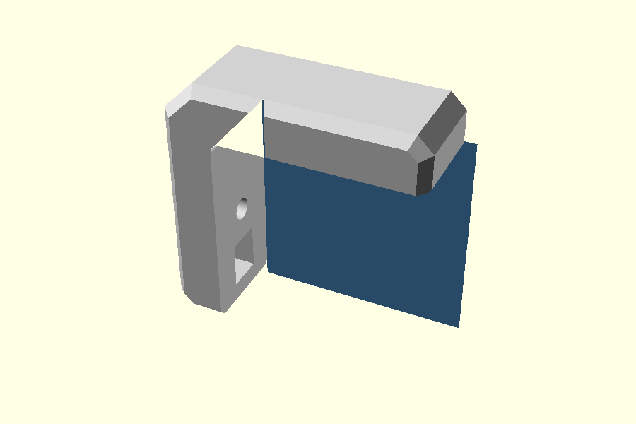
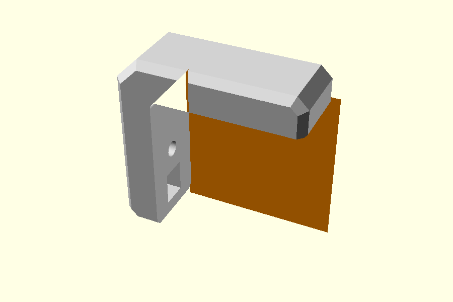
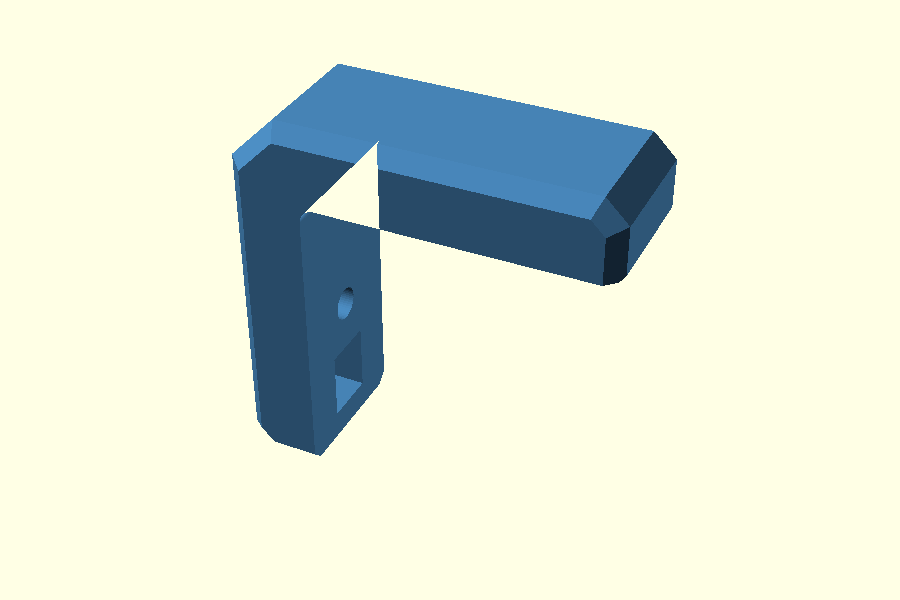
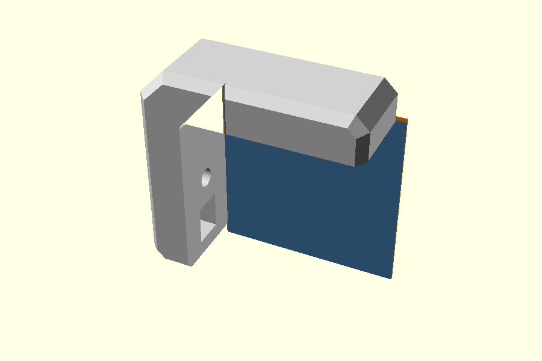
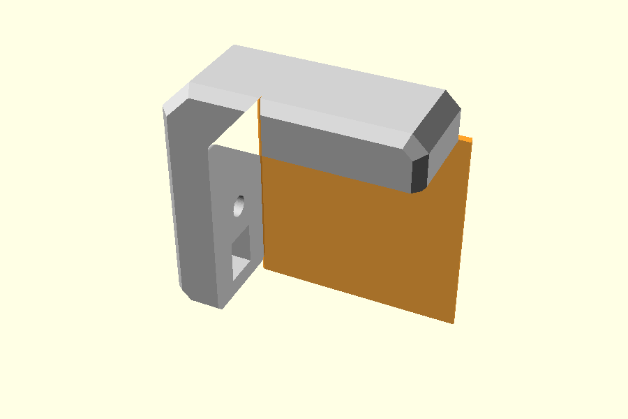
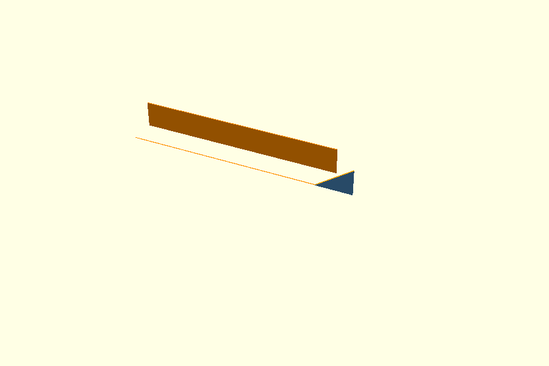
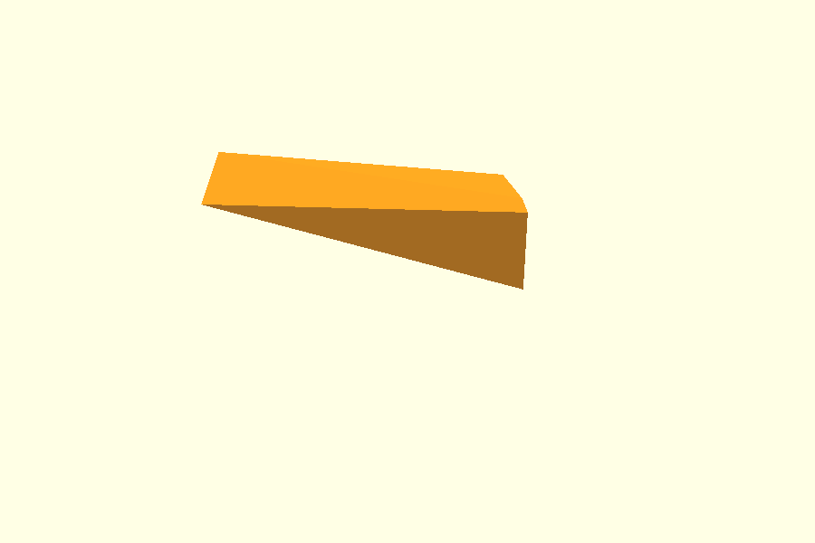
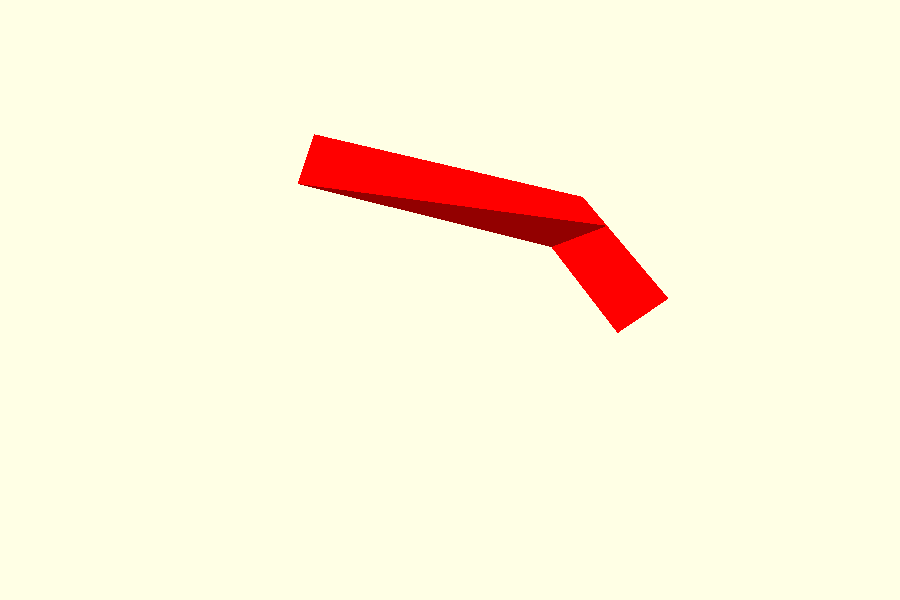
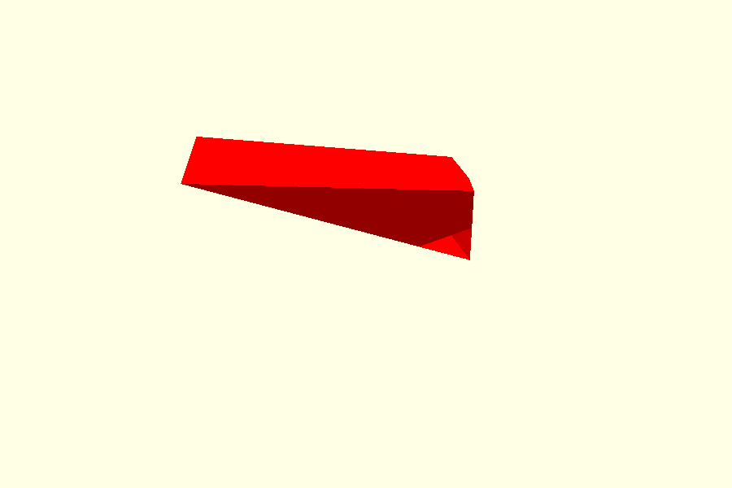
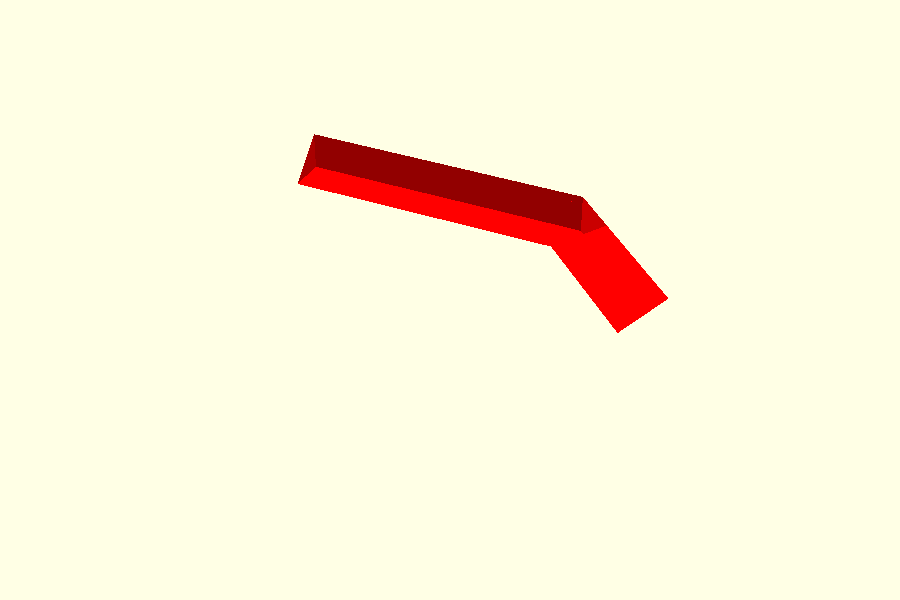

Elephant-foot relief on the Corner Bracket
This page explains the elephant-foot geometry in three separate blocks.
- First build the normal elephant-foot relief using only the two main hulls.
- Repeat the same steps and then add the small arm-tip correction.
- Only after those two constructions are clear, test whether the correction can be absorbed into the original two hull surfaces.
The images in blocks A and B use the same complete bracket, camera angle and scale. Blue/orange/red therefore always refer to geometry at the same physical location.
The real model exposes:
openscad
ef_corner_correction = true;
Set it to false to compare the model with only the two main EF hulls.
A. Elephant foot with the two main hulls
This first sequence deliberately contains no arm-tip correction.
A1. Start with the complete bracket
The bracket already has its normal 2D profile, the outside cs side
chamfers, bolt holes and nut pockets. No elephant-foot relief has been
subtracted yet.

This complete bracket stays visible throughout the next steps so the hull surfaces never lose their relationship to the model.
A2. First hull surface
The first thin surface is placed 0.6 mm inside the print face, at Y = 9.4 mm.

It follows the two wood-contact edges of the L and the rounded inside corner.
openscad
opening_layer(W/2 - ef);
With W = 20 and ef = 0.6, this means Y = 9.4 mm.
A3. Second hull surface
The second surface is on the actual print face, Y = 10.0 mm. Its profile
is expanded outward by ef = 0.6.

openscad
opening_layer(W/2, ef);
A4. Both hull surfaces
Now show the two surfaces together:

- Blue: unchanged profile at Y = 9.4 mm.
- Orange: expanded profile at Y = 10.0 mm.
These are the two children of one hull() on this print side. The
opposite Y side uses the mirrored pair.
A5. Hull between those two surfaces
hull() fills the volume between the blue and orange surfaces:

openscad
hull() {
opening_layer(W/2 - ef);
opening_layer(W/2, ef);
}
This is the main 45° elephant-foot relief for one print side.
A6. Subtract the main hulls
The same construction is mirrored on the other print side and both hull volumes are subtracted from the bracket.

This corresponds to:
openscad
ef_corner_correction = false;
Most of the relief is now correct.
A7. Where is the remaining problem?
The four red markers show the only places still under discussion:

There are four locations because there are two arm ends on two print-facing Y sides.
This is the important baseline: the main elephant-foot hull works; the remaining issue is local to those four arm-tip junctions.
B. Repeat the same construction with the working correction
This sequence repeats A using the same camera, same scale and same bracket. The first five steps are intentionally almost identical. Only then is the small arm-tip correction added.
B1. Same starting bracket

B2. Same first hull surface

B3. Same second hull surface

B4. Same two hull surfaces together

B5. Same main hull

Up to this point, B is geometrically identical to A.
B6. Add the correction at the four arm-tip locations
At whole-bracket scale the actual correction is too small to read clearly, so the same four red location markers are used:

The exact correction shape is shown later in C1, after zooming into one of these four locations.
Conceptually the working construction is:
```openscad difference() { body();
inside_relief_envelope(); // main EF hulls
relief_corner_miters(); // small arm-tip corrections
} ```
B7. Working bracket
With the correction enabled, the complete bracket becomes:
This corresponds to:
openscad
ef_corner_correction = true;
Blocks A and B now establish exactly what changes: only the four small arm-tip locations.
C. Can the correction be absorbed into the original two hull surfaces?
Only now do we zoom into one horizontal arm end on the +Y print side.
The question is not whether the current model works; block B already shows that. The question is whether we can simplify B so that the corrected result comes from only two improved hull surfaces.
C1. Exact missing relief at one arm tip
The red volume is the local difference between A and B at one marked arm tip:

C2. Exact two surfaces taken from the working relief
Rather than guessing how the profiles should change, take exact
projection(cut=true) cross-sections of the working B relief at the same
two Y positions:

C3. Hull those exact two surfaces

C4. Result of that two-surface candidate

C5. Compare with the working B result
The XOR is not empty:

Split into:


For the default cs=2, ef=0.6 case:
| Local arm-tip volume | mm³ |
|---|---|
| Working reference | 1.2433 |
| Exact two-surface candidate | 2.4922 |
| XOR | 1.9006 |
| Overcut | 1.5743 |
| Undercut | 0.3263 |
So the current test says only this:
Two surfaces at the existing Y = 9.4 and Y = 10.0 positions do not reproduce the working B geometry, even when those two surfaces are exact sections of the working relief.
That does not rule out a different construction using additional sections or another decomposition.
Related pages
- Chamfer Guide — the normal bracket construction.
- Hull Guide — basic
hull()operation. - Polygon Guide — the separate 2D inside-radius construction.